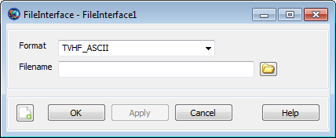

FileInterface — An interface to a data file
The FileInterface resource is an interface to a data file that can be used to load mission data, like Spacecraft state information and physical properties. Once an interface is established to a file, the Set command can be used to load the data and apply it to a destination.
The following file formats are currently supported:
TVHF_ASCII: ASCII format of the TCOPS
Vector Hold File (TVHF), defined by the NASA Goddard Space Flight
Center Flight Dynamics Facility. This file contains spacecraft state
and physical information that can be transferred to a
Spacecraft resource.
See Also: Set
| Field | Description | ||||||||||||
|---|---|---|---|---|---|---|---|---|---|---|---|---|---|
| Filename | Full path of the file to read. Relative paths are
interpreted as relative to the directory containing the GMAT
executable. If the path is omitted, it is assumed to be
“
| ||||||||||||
| Format | Format of the file to read. Currently, the only
allowed format is
“
|
|  |
The FileInterface GUI has two fields: a list of accepted options for Format (currently only TVHF_ASCII), and an input box for Filename. Click to the right of the Filename box to interactively select a file.
Each file format supported by the FileInterface resource exposes a set of keywords that can be used to extract certain data elements. These keywords can be used in the Data option of the Set command, as follows:
Setdestinationsource(Data = {keyword[,keyword]})
If the 'All' keyword is used, those fields with a
checkmark in the “All” column are selected.